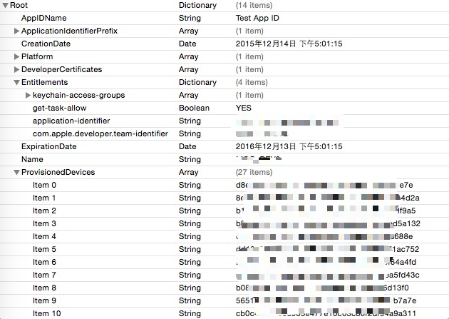
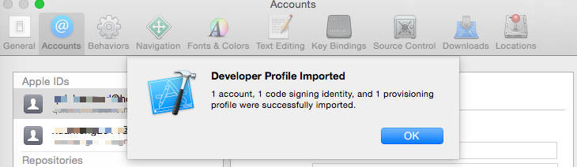
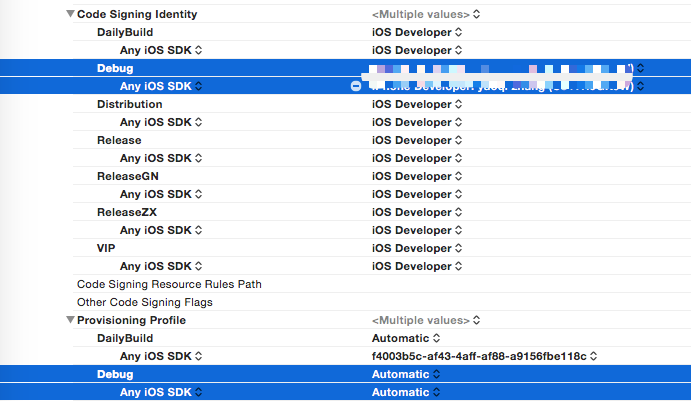

背景
平时测试同学可以将CI系统上的包（企业证书签名）替换为开发者证书，以便于使用Instruments进行专项测试。网上也有很多重签名的工具。那么证书是什么意思呢？重签名的原理是什么？
签名(codesign)
代码签名可以确保App的来源可靠，并且App在被签名后没有被篡改过。只有被签名过的App才可以在非越狱设备上运行。
证书(certificate)
证书主要分为两种：开发证书(Develop)和发布证书(Distribute)。顾名思义，不再赘述。完整的iOS证书包含公钥和私钥，私钥用于签名，公钥用于验证。一般来说将完整的公钥和私钥导出生成个人信息交换文件(.p12)文件，开发团队通过共享.p12文件来搭建完整的证书环境。
App ID
App ID包含了两个部分：Team ID和Bundle ID。Team ID是由苹果提供的唯一的用来表示开发组的序号。而Bundle ID是有开发者自由设置的，用来唯一指定一个或者一组App。App ID有两种类型一种是显式的，一种是包含通配符的。为了确保App ID的唯一性，其格式也需要严格按照规范。细节请参考Apple官网。
UDID(Unique Device Identifier)
每一台苹果设备，包括iPhone、ipad甚至Apple TV，都有其唯一的ID，它是包含40个16进制字符。通常可以使用iTunes或者xcode来查看已连接的设备的UDID。每一个开发者账号下最多加入100个设备，也就是注册100个UDID。只有设备被注册在开发者账号下，才能对该设备进行真机调试。
描述配置文件(Provision Profile)
Provision Profile在App启动前会首先被安装到设备上，操作系统据此来判断一个App是否能够运行。一个Development Provision Profile包含了App ID、可用的证书以及设备等信息。这样就限制了App必须拥有相应的App ID、使用相应的证书打包并安装到相应的设备上。
在设备上运行App前需要进行验证：
Provision Profile决定了使用哪个证书(公钥/私钥）来签名，在打包成ipa时也会将Provision Profile嵌入ipa中。iOS会通过App中的Provision Profile中的开发者证书校验codesign的一致性，保证App的合法性。
Provision Profile其实本质就是一个plist文件，只不过它使用了CMS加密了，使用security命令可以查看其内容：
1 | security cms -D -i example.mobileprovision > example.plist |
打开plist文件可以查看其内容:

值得注意的是Entitlements。在iOS上App所能做的事情是受到限制的，App是需要授权才能访问特定的系统资源。Entitlements就是App的授权内容，其中注意get-task-allow是用来控制是否允许连接到调试器。
Xcode工程配置证书签名
如果测试同学本地有代码权限时，可以在xcode中直接配置签名并编译。首先需要向开发同学索取开发者证书，通常情况下开发同学会提供.developerprofile文件。developerprfile文件包括了.p12和.mobileprovision，更加方便共享。双击安装导入该文件即可。

当然也可以由开发同学直接提供.p12和.mobileprovision文件。双击.p12安装到钥匙串中。安装.mobileprovision稍微复杂，如果Mac上安装了【iPhone配置实用工具】，直接双击将其添加到资料库中。如果没有安装，则按照以下步骤：
将mobileprovision转化为plist
1
security cms -D -i ***.mobileprovision > ***.plist
打印出UUID
1
/usr/libexec/PlistBuddy -c "Print UUID" ***.plist
将mobileprovision文件重命名为 UUID.mobileprovision
将其拷贝到
~/Library/MobileDevice/Provisioning Profiles下
在项目中选择开发组为None，同时在Build Settings中设置签名以及Provision Profile：

Code Signing Identity选择开发者证书名称，Provision Profile通常选择Automatic。
重签名原理
为什么IpaResin.sh能够将rdm上下载的包重签名？重签名的大概步骤包括：
- 删除旧的code sign
- 替换App中已有的Provision Profile，便于校验新的codesign
- 将App用新的证书来签名
ipa其实就是一个zip文件，使用unzip命令将ipa解压开，会得到Payload文件夹，其中包含一个后缀为app的包。
删除旧的code sign
签名被保存在Payload/*.app/_CodeSignature/CodeResources文件中，将其删除
替换Provision Profile
App中包含的Provision Profile所在的位置为Payload/*.app/embedded.mobileprovision，所以只需要将新的mobileprovision文件拷贝到相应位置替换即可
此外还需要将Provision Profile中Entitlements导出到plist中，后面需要在签名是通过--entitlements参数将该文件内容送入。尤其需要注意将get-task-allow设为YES。
使用新的证书重签名
资源文件是否也需要被签名，是由ResourceRules.plist来配置的，这个文件用来规定哪些资源文件不需要检测完整性。当资源文件也被签名时，则该资源不可更改。
codesign命令是用来制作、验证、展示代码签名，使用该命令将app文件重新签名。代码签名的基本思路是：
- 资源文件配置规则保持不变，即使用原来的
ResourceRules.plist，使用--resource-rules参数设置。 - 授权文件通过新的
mobileprovision文件来获得，使用--entitlements参数设置。 - 使用新的开发者证书来签名，使用
-s参数来设置。
打包
为app中的可执行文件添加可执行权限后，将重签名的app文件重新打包为ipa即可。